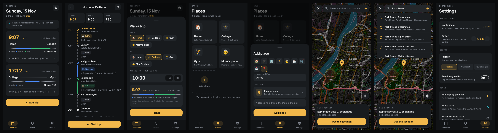

EDGETHE STAGE IS YOURS.
EDGETHE STAGE IS YOURS.
LIVE PERFORMANCE / MARKETPLACE
EDGE
A two-sided gig marketplace connecting artists and organisers through structured booking workflows.
React
TypeScript
Firebase
PERSONAL PORTFOLIO / KOLKATA, INDIA
I’m a software developer at Coral Servsoft Pvt. Ltd. I work where business logic, data, and everyday usability meet.
From ERP transaction engines and T-SQL to Flutter applications, .NET services, and build automation—I enjoy turning complicated requirements into dependable software.
SELECT A PLATFORM
Explore real application interfaces and the systems behind them.
All projects, releases and case studies ↗01 / SELECTED WORK
EDGETHE STAGE IS YOURS.
LIVE PERFORMANCE / MARKETPLACE
A two-sided gig marketplace connecting artists and organisers through structured booking workflows.

DEVELOPER EXPERIENCE / WINDOWS
A native Windows workspace that helps people understand changes, history and their next Git action.

EVERYDAY SYSTEMS / KOLKATA
A Kolkata-focused planner for saved places, trips, route timelines and nightly reminders.

ARTIST IDENTITY / INDEPENDENT MUSIC
An artist site bringing real music, illustration, live moments and direct platform choices together.
02 / THE PERSON BEHIND THE CODE
I like the part where a complicated problem starts to make sense.
My work spans ERP systems, database engineering, cross-platform applications, and the small interface decisions that make software easier to live with.
That means time in VB.NET, C#, T-SQL, Flutter, and build tooling—and just as much time asking what the person on the other side actually needs.
Outside the editor: PC hardware, smart-home experiments, and a good game to disappear into.
A conversation is a good place to start ↗03 / ALONG THE WAY
Coral Servsoft Pvt. Ltd.
ERP modules, database workflows, Flutter applications, stored procedures, and reporting. Working across business logic and the interfaces around it.
VB.NET / C# / SQL SERVER / FLUTTERTime focused on cross-platform development, personal projects, and building a deeper technical foundation.
Tech Mahindra
Backend support and customer enquiries for Flipkart, with a focus on system and transaction accuracy.
Infosys Ltd.
Systems engineering training, Linux configuration, programming, and infrastructure fundamentals.
B.Tech, Computer Science & Engineering
Neotia Institute of Technology Management & ScienceEXPLORE / MORE THAN A PROJECT GRID
CLIENT TESTIMONIALS
Abhranil refactored our core ERP transaction engines, which significantly optimized query execution times and improved database reliability. He is highly detail-oriented and very skilled at T-SQL.
Abhranil designed and built our customer-facing mobile applications from scratch using Flutter. The app performance and user experience have been exceptional. Highly recommended.
PEOPLE / WORKING TOGETHER
Read feedback from people I’ve worked with, explore my professional background, or start a conversation.